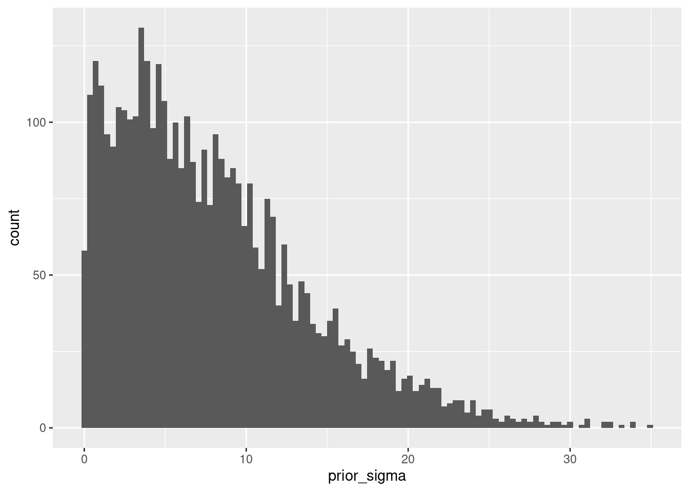
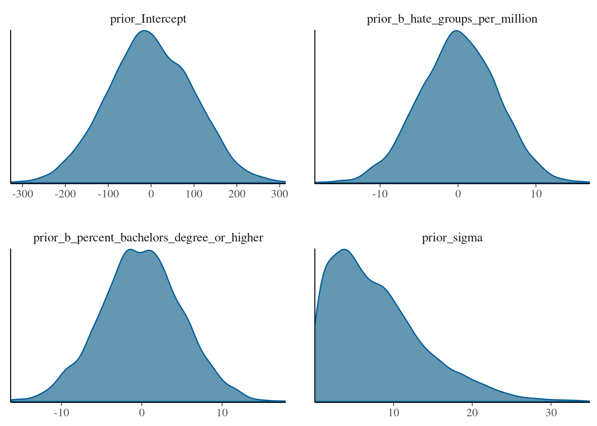
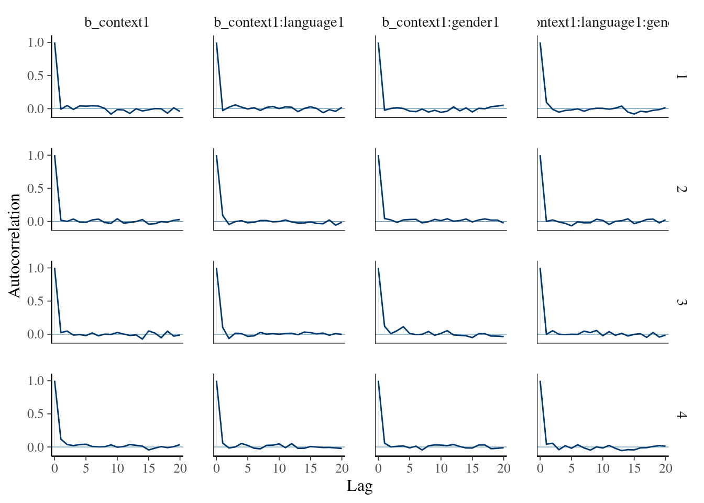

Chapter 12 Bayesian estimation with brms
12.1 The brms package
brms (Bürkner 2022) stands for Bayesian Regression Models using Stan. (https://mc-stan.org/)[Stan] is general software for Bayesian model specification and estimation, implementing Hamiltonian Monte Carlo as the main MCMC algorithm. Due to its efficiency and flexibility, it has quickly become one of the most popular software packages for Bayesian modelling. Stan uses its own language to define Bayesian models, which may pose a learning curve. The brms package provides an easy-to-use interface to Stan for estimating generalized linear mixed-effects models. As this covers a large part of the models used for data analysis in psychology,
12.1.1 Model definition
Defining models in brms is relatively straightforward, as the package relies on a similar
formula interface as lm, glm, and lme4. The main workhorse is the brms::brm() function. Main arguments for brms::brm() are:
formula: a model formula, using thelme4syntax. Table 12.1 contains a reminder of this syntax.data: thedata.framecontaining the variables used in the model formula.family: similar to that used inglm(), a description of the response distribution (likelihood). By default, this is a Normal distribution.prior: definition of the prior distributions. If not specified, default priors are used for all parameters.sample_prior: logical, to indicate whether you also want to obtain draws from the prior distributions.chains: number of parallel MCMC chains to run (defaults to 4).iter: total number of MCMC iterations per chain (defaults to 2000).warmup: number of samples to discard as a warmup or burn-in sample (defaults toiter/2).thin: the so-called thinning rate, which can be used to only keep every \(k\)th sample.seed: may be used to set the random seed for replication of results.cores: specify the number of cores of the CPU to be used to run the chains in parallel. This defaults to 1 (each chain is run after the other). If you have a multicore CPU, it is better to set this higher (e.g. to 4) to speed-up computation time.
| Formula | Description |
|---|---|
a + b |
main effects of a and b (and no interaction) |
a:b |
only interaction of a and b (and no main effects) |
a * b |
main effects and interaction of a and b (expands to: a + b + a:b) |
(a+b+c)^2 |
main effects and two-way interactions, but no three-way interaction (expands to: a + b + c + a:b + b:c + a:c) |
(a+b)*c |
all main effects and pairwise interactions between c and a or b (expands to: a + b + c + a:c + b:c) |
0 + a |
0 suppresses the intercept resulting in a model that has one parameter per level of a (identical to: a - 1) |
(1|s) |
random intercepts for unique level of the factor s |
(1|s) + (1|i) |
random intercepts for each unique level of s and for each unique level of i |
(1|s/i) |
random intercepts for factor s and i, where the random effects for i are nested in s. This expands to (1|s) + (1|s:i), i.e. a random intercept for each level of s, and each unique combination of the levels of s and i. Nested random effects are used in so-called multilevel models. For example, s might refer to schools, and i to classrooms within those schools. |
(a|s) |
random intercepts and random slopes for a, for each level of s. Correlations between the intercept and slope effects are also estimated. (identical to (a*b|s)) |
(a*b|s) |
random intercepts and slopes for a, b, and the a:b interaction, for each level of s. Correlations between all the random effects are estimated. |
(0+a|s) |
random slopes for a for each level of s, but no random intercepts |
(a||s) |
random intercepts and random slopes for a, for each level of s, but no correlations between the random effects (i.e. they are set to 0). This expands to: (0+a|s) + (1|s)) |
12.1.1.1 Brms family
The family argument in brms::brm() is used to define the random part of the model. The brms package extends the options of the family argument in the glm() function to allow for a much wider class of likelihoods. You can see the help file (help("brmsfamily", package="brms")) for a full list of the current options. Some examples of available options are:
- Normal distribution, for linear regression and the GLM:
gaussian(link = "identity") - Generalized Student \(t\)-distribution, useful for robust linear regression less influenced by outliers:
student(link = "identity", link_sigma = "log", link_nu = "logm1") - Bernoulli distribution, for logistic regression:
bernoulli(link = "logit") - Poisson distribution, useful for unbounded count data:
poisson(link = "log") - Categorical distribution, for multinomial logistic regression:
categorical(link = "logit", refcat = NULL) - Beta-distribution, for regression of a dependent variable bounded between 0 and 1 (e.g. proportions):
Beta(link = "logit", link_phi = "log") - Ex-Gaussian distribution, popular for modelling reaction times:
exgaussian(link = "identity", link_sigma = "log", link_beta = "log")
And there are many more options. There is even a so-called Wiener diffusion distribution implemented, which can be used to estimate the drift-diffusion model (wiener(link = "identity", link_bs = "log", link_ndt = "log", link_bias = "logit")).
Note that many of the brmsfamily objects have multiple link functions, one for each parameter of the distribution. For example, in student(link = "identity", link_sigma = "log", link_nu = "logm1"), there is one link function for the mean (link), one for the standard deviation (link_sigma), and one for the degrees of freedom (link_nu). This family implements a generalized \(t\)-distribution, which, in contrast to the standard \(t\)-distribution, has a location and scale parameter like the Normal distribution. But the degrees of freedom allow this distribution to have wider tails than the Normal distribution, which can make it more robust against outliers.
As an example of estimating a model with brms, we can estimate a linear regression model as follows:
library(brms)## Loading required package: Rcpp## Loading 'brms' package (version 2.18.0). Useful instructions
## can be found by typing help('brms'). A more detailed introduction
## to the package is available through vignette('brms_overview').##
## Attaching package: 'brms'## The following object is masked from 'package:stats':
##
## ardata("trump2016", package="sdamr")
dat <- subset(trump2016,state != "District of Columbia")
mod_regression <- brms::brm(formula = percent_Trump_votes ~ hate_groups_per_million +
percent_bachelors_degree_or_higher,
family=gaussian(), data=dat, seed=112)## Compiling Stan program...## Start sampling##
## SAMPLING FOR MODEL '827c0bc9f8c7384ba846b3e6a6ef59d8' NOW (CHAIN 1).
## Chain 1:
## Chain 1: Gradient evaluation took 2.7e-05 seconds
## Chain 1: 1000 transitions using 10 leapfrog steps per transition would take 0.27 seconds.
## Chain 1: Adjust your expectations accordingly!
## Chain 1:
## Chain 1:
## Chain 1: Iteration: 1 / 2000 [ 0%] (Warmup)
## Chain 1: Iteration: 200 / 2000 [ 10%] (Warmup)
## Chain 1: Iteration: 400 / 2000 [ 20%] (Warmup)
## Chain 1: Iteration: 600 / 2000 [ 30%] (Warmup)
## Chain 1: Iteration: 800 / 2000 [ 40%] (Warmup)
## Chain 1: Iteration: 1000 / 2000 [ 50%] (Warmup)
## Chain 1: Iteration: 1001 / 2000 [ 50%] (Sampling)
## Chain 1: Iteration: 1200 / 2000 [ 60%] (Sampling)
## Chain 1: Iteration: 1400 / 2000 [ 70%] (Sampling)
## Chain 1: Iteration: 1600 / 2000 [ 80%] (Sampling)
## Chain 1: Iteration: 1800 / 2000 [ 90%] (Sampling)
## Chain 1: Iteration: 2000 / 2000 [100%] (Sampling)
## Chain 1:
## Chain 1: Elapsed Time: 0.041784 seconds (Warm-up)
## Chain 1: 0.036 seconds (Sampling)
## Chain 1: 0.077784 seconds (Total)
## Chain 1:
##
## SAMPLING FOR MODEL '827c0bc9f8c7384ba846b3e6a6ef59d8' NOW (CHAIN 2).
## Chain 2:
## Chain 2: Gradient evaluation took 7e-06 seconds
## Chain 2: 1000 transitions using 10 leapfrog steps per transition would take 0.07 seconds.
## Chain 2: Adjust your expectations accordingly!
## Chain 2:
## Chain 2:
## Chain 2: Iteration: 1 / 2000 [ 0%] (Warmup)
## Chain 2: Iteration: 200 / 2000 [ 10%] (Warmup)
## Chain 2: Iteration: 400 / 2000 [ 20%] (Warmup)
## Chain 2: Iteration: 600 / 2000 [ 30%] (Warmup)
## Chain 2: Iteration: 800 / 2000 [ 40%] (Warmup)
## Chain 2: Iteration: 1000 / 2000 [ 50%] (Warmup)
## Chain 2: Iteration: 1001 / 2000 [ 50%] (Sampling)
## Chain 2: Iteration: 1200 / 2000 [ 60%] (Sampling)
## Chain 2: Iteration: 1400 / 2000 [ 70%] (Sampling)
## Chain 2: Iteration: 1600 / 2000 [ 80%] (Sampling)
## Chain 2: Iteration: 1800 / 2000 [ 90%] (Sampling)
## Chain 2: Iteration: 2000 / 2000 [100%] (Sampling)
## Chain 2:
## Chain 2: Elapsed Time: 0.041861 seconds (Warm-up)
## Chain 2: 0.03302 seconds (Sampling)
## Chain 2: 0.074881 seconds (Total)
## Chain 2:
##
## SAMPLING FOR MODEL '827c0bc9f8c7384ba846b3e6a6ef59d8' NOW (CHAIN 3).
## Chain 3:
## Chain 3: Gradient evaluation took 7e-06 seconds
## Chain 3: 1000 transitions using 10 leapfrog steps per transition would take 0.07 seconds.
## Chain 3: Adjust your expectations accordingly!
## Chain 3:
## Chain 3:
## Chain 3: Iteration: 1 / 2000 [ 0%] (Warmup)
## Chain 3: Iteration: 200 / 2000 [ 10%] (Warmup)
## Chain 3: Iteration: 400 / 2000 [ 20%] (Warmup)
## Chain 3: Iteration: 600 / 2000 [ 30%] (Warmup)
## Chain 3: Iteration: 800 / 2000 [ 40%] (Warmup)
## Chain 3: Iteration: 1000 / 2000 [ 50%] (Warmup)
## Chain 3: Iteration: 1001 / 2000 [ 50%] (Sampling)
## Chain 3: Iteration: 1200 / 2000 [ 60%] (Sampling)
## Chain 3: Iteration: 1400 / 2000 [ 70%] (Sampling)
## Chain 3: Iteration: 1600 / 2000 [ 80%] (Sampling)
## Chain 3: Iteration: 1800 / 2000 [ 90%] (Sampling)
## Chain 3: Iteration: 2000 / 2000 [100%] (Sampling)
## Chain 3:
## Chain 3: Elapsed Time: 0.040205 seconds (Warm-up)
## Chain 3: 0.035714 seconds (Sampling)
## Chain 3: 0.075919 seconds (Total)
## Chain 3:
##
## SAMPLING FOR MODEL '827c0bc9f8c7384ba846b3e6a6ef59d8' NOW (CHAIN 4).
## Chain 4:
## Chain 4: Gradient evaluation took 7e-06 seconds
## Chain 4: 1000 transitions using 10 leapfrog steps per transition would take 0.07 seconds.
## Chain 4: Adjust your expectations accordingly!
## Chain 4:
## Chain 4:
## Chain 4: Iteration: 1 / 2000 [ 0%] (Warmup)
## Chain 4: Iteration: 200 / 2000 [ 10%] (Warmup)
## Chain 4: Iteration: 400 / 2000 [ 20%] (Warmup)
## Chain 4: Iteration: 600 / 2000 [ 30%] (Warmup)
## Chain 4: Iteration: 800 / 2000 [ 40%] (Warmup)
## Chain 4: Iteration: 1000 / 2000 [ 50%] (Warmup)
## Chain 4: Iteration: 1001 / 2000 [ 50%] (Sampling)
## Chain 4: Iteration: 1200 / 2000 [ 60%] (Sampling)
## Chain 4: Iteration: 1400 / 2000 [ 70%] (Sampling)
## Chain 4: Iteration: 1600 / 2000 [ 80%] (Sampling)
## Chain 4: Iteration: 1800 / 2000 [ 90%] (Sampling)
## Chain 4: Iteration: 2000 / 2000 [100%] (Sampling)
## Chain 4:
## Chain 4: Elapsed Time: 0.040014 seconds (Warm-up)
## Chain 4: 0.032193 seconds (Sampling)
## Chain 4: 0.072207 seconds (Total)
## Chain 4:Because estimation with brms involves random sampling via stan, we use the seed argument to be able to reproduce the results.
You can obtain a summary of the model via the summary() function:
summary(mod_regression)## Family: gaussian
## Links: mu = identity; sigma = identity
## Formula: percent_Trump_votes ~ hate_groups_per_million + percent_bachelors_degree_or_higher
## Data: dat (Number of observations: 50)
## Draws: 4 chains, each with iter = 2000; warmup = 1000; thin = 1;
## total post-warmup draws = 4000
##
## Population-Level Effects:
## Estimate Est.Error l-95% CI u-95% CI Rhat
## Intercept 81.91 6.37 69.15 94.33 1.00
## hate_groups_per_million 1.31 0.54 0.24 2.37 1.00
## percent_bachelors_degree_or_higher -1.22 0.19 -1.59 -0.84 1.00
## Bulk_ESS Tail_ESS
## Intercept 3489 2712
## hate_groups_per_million 3888 3113
## percent_bachelors_degree_or_higher 3702 2964
##
## Family Specific Parameters:
## Estimate Est.Error l-95% CI u-95% CI Rhat Bulk_ESS Tail_ESS
## sigma 6.80 0.72 5.57 8.35 1.00 3376 3026
##
## Draws were sampled using sampling(NUTS). For each parameter, Bulk_ESS
## and Tail_ESS are effective sample size measures, and Rhat is the potential
## scale reduction factor on split chains (at convergence, Rhat = 1).The output first shows details of the model (e.g. family and model formula), and MCMC estimation (e.g. number of chains and iterations). Under Population-Level Effects: you will find a summary of the approximate posterior distribution for the main parameters of interest (Intercept, and slopes for hate_groups_per_million and percent_bachelors_degree_or_higher). The Estimate is the posterior mean, the Est.Error is the posterior standard deviation, the l-95% CI and u-95% CI provide respectively the lower and upper bound of the 95% Highest Density Interval. The width of the latter interval can be changed by supplying a prob argument to the summary function. For example, summary(mod, prob=.9) would return the 90% HDI.
The Rhat the \(\hat{R}\) values, and Bulk_ESS an estimate of the Effective Sample Size (ESS). The Tail_ESS provides somewhat of a lower bound on the ESS estimate (see Vehtari et al. 2019). Under Family Specific Parameters:, you will find the same information for the non-regression parameters (i.e. \(\sigma_\epsilon\) for a linear regression model).
You can obtain a quick plot showing a nonparametric density estimate for each parameter, and a plot of the sampled values per iteration and chain, via the plot() function:
plot(mod_regression)If you want to create your own plots, there are several functions to extract the posterior samples of the parameters. Perhaps the most convenient is brms::as_draws_df(), which returns a data.frame with the posterior samples.
head(as_draws_df(mod_regression))## # A draws_df: 6 iterations, 1 chains, and 6 variables
## b_Intercept b_hate_groups_per_million b_percent_bachelors_degree_or_higher
## 1 79 1.75 -1.2
## 2 82 2.12 -1.3
## 3 90 0.78 -1.4
## 4 80 1.42 -1.2
## 5 86 1.02 -1.3
## 6 93 0.46 -1.5
## sigma lprior lp__
## 1 7.1 -6.5 -171
## 2 6.8 -6.5 -170
## 3 7.2 -6.5 -171
## 4 6.4 -6.4 -169
## 5 6.5 -6.5 -169
## 6 6.1 -6.4 -172
## # ... hidden reserved variables {'.chain', '.iteration', '.draw'}12.1.2 Priors
In the example above, we did not specify prior distributions. The brms::brm function uses default values for prior distributions if these are not explicitly set. You can view some detauls of these prior distributions via the prior_summary() function:
brms::prior_summary(mod_regression)## prior class coef group
## (flat) b
## (flat) b hate_groups_per_million
## (flat) b percent_bachelors_degree_or_higher
## student_t(3, 49.3, 11.9) Intercept
## student_t(3, 0, 11.9) sigma
## resp dpar nlpar lb ub source
## default
## (vectorized)
## (vectorized)
## default
## 0 defaultThe output indicates that “flat” priors are used for the slopes of hate_groups_per_million and percent_bachelors_degree_or_higher. The “flat” priors are so-called improper priors, which indicate that any possible value is equally likely. These priors are therefore also uninformative priors. The prior for \(\sigma_\epsilon\), the error SD (sigma), the prior is a (half) \(t\)-distribution with \(\text{df}=3\), mean 0, and standard deviation 11.9. The SD is close to the SD of the dependent variable (percent_Trump_votes). This is reasonable in providing a weakly informative prior, as the error SD should be smaller than the SD of the dependent variable.
For the intercept, a \(t\)-distribution is used, with \(\text{df}=3\), a mean of 49.3, and an SD of 11.9. The mean and SD of the prior are close to the mean and SD of percent_Trump_votes. So the prior for the intercept is based on characteristics of the dependent variable, which allows it to automatically have a reasonable scale. Note that the intercept in a brms::brm() model is computed separately, using centered predictors. It then corrects the sampled intercepts again after estimation, to provide an intercept for non-centered predictors. For more details, you can see the brms manual (help("brmsformula", package="brms")). If you need to define a prior on the scale of the usual intercept, this behaviour needs to be turned off first.
Default priors are generally fine. But if you want to define your own priors, this is possible with the prior argument. The prior argument expects a vector with prior specifications for each parameter for which you want to set a different prior than default. Each element in this vector needs to be an object of the brmsprior class. The easiest way to obtain such objects is by calling the brms::prior() function. This function has as important arguments:
* prior: a specification of a distribution in the Stan language. There are many such distributions available (see the Stan Functions Reference for the full list). Common examples are normal(mean, sd), student(df, mean, sd). cauchy(mean, sd), beta(alpha, beta), where the values between the parentheses indicate so-called hyper-parameters (i.e. the parameters defining the distribution). I have used df, mean, and sd here, but the Stan manual uses nu, mu, and sigma for these.
* class: the class of the parameter. This can for example be b for a regression coefficient (slope), sigma for an error SD, and Intercept for the intercept. This is what you will find under the class column in the output of brms::prior_summary(). Depending on the class, the prior may be restricted to respect the bounds for the parameter. For example, for a prior with class=sigma, the prior will always be truncated at 0, without you having to specify.
* coef: the name of the coefficient in the parameter class. This is what you will find under the coef column in the output of brms::prior_summary().
* group: A grouping factor for group-level (random) effects.
For example, we can set Normal priors with a mean of 0 and a standard deviation depending on the parameters as follows. We use the c() function to create the vector with brmsprior objects. We need to define four such objects, each via a call to the prior() function. We assign the result to ab object called mod_priors, so that we can then use it in a call to brms::brm():
mod_priors <- c(# intercept
prior(normal(0, 100), class = Intercept),
# slopes
prior(normal(0, 5), class = b, coef = "hate_groups_per_million"),
prior(normal(0, 5), class = b, coef = "percent_bachelors_degree_or_higher"),
# error SD
prior(normal(0, 10), class = sigma))We can now use our mod_priors object as the argument to prior, to estimate a regression model with non-default priors:
mod_regression_2 <- brms::brm(formula = percent_Trump_votes ~ hate_groups_per_million + percent_bachelors_degree_or_higher,
data=dat, seed=101, sample_prior = TRUE, prior = mod_priors)## Compiling Stan program...## Start sampling##
## SAMPLING FOR MODEL 'c102a4e44a8ca665cf297428b489e138' NOW (CHAIN 1).
## Chain 1:
## Chain 1: Gradient evaluation took 1.7e-05 seconds
## Chain 1: 1000 transitions using 10 leapfrog steps per transition would take 0.17 seconds.
## Chain 1: Adjust your expectations accordingly!
## Chain 1:
## Chain 1:
## Chain 1: Iteration: 1 / 2000 [ 0%] (Warmup)
## Chain 1: Iteration: 200 / 2000 [ 10%] (Warmup)
## Chain 1: Iteration: 400 / 2000 [ 20%] (Warmup)
## Chain 1: Iteration: 600 / 2000 [ 30%] (Warmup)
## Chain 1: Iteration: 800 / 2000 [ 40%] (Warmup)
## Chain 1: Iteration: 1000 / 2000 [ 50%] (Warmup)
## Chain 1: Iteration: 1001 / 2000 [ 50%] (Sampling)
## Chain 1: Iteration: 1200 / 2000 [ 60%] (Sampling)
## Chain 1: Iteration: 1400 / 2000 [ 70%] (Sampling)
## Chain 1: Iteration: 1600 / 2000 [ 80%] (Sampling)
## Chain 1: Iteration: 1800 / 2000 [ 90%] (Sampling)
## Chain 1: Iteration: 2000 / 2000 [100%] (Sampling)
## Chain 1:
## Chain 1: Elapsed Time: 0.040125 seconds (Warm-up)
## Chain 1: 0.035123 seconds (Sampling)
## Chain 1: 0.075248 seconds (Total)
## Chain 1:
##
## SAMPLING FOR MODEL 'c102a4e44a8ca665cf297428b489e138' NOW (CHAIN 2).
## Chain 2:
## Chain 2: Gradient evaluation took 7e-06 seconds
## Chain 2: 1000 transitions using 10 leapfrog steps per transition would take 0.07 seconds.
## Chain 2: Adjust your expectations accordingly!
## Chain 2:
## Chain 2:
## Chain 2: Iteration: 1 / 2000 [ 0%] (Warmup)
## Chain 2: Iteration: 200 / 2000 [ 10%] (Warmup)
## Chain 2: Iteration: 400 / 2000 [ 20%] (Warmup)
## Chain 2: Iteration: 600 / 2000 [ 30%] (Warmup)
## Chain 2: Iteration: 800 / 2000 [ 40%] (Warmup)
## Chain 2: Iteration: 1000 / 2000 [ 50%] (Warmup)
## Chain 2: Iteration: 1001 / 2000 [ 50%] (Sampling)
## Chain 2: Iteration: 1200 / 2000 [ 60%] (Sampling)
## Chain 2: Iteration: 1400 / 2000 [ 70%] (Sampling)
## Chain 2: Iteration: 1600 / 2000 [ 80%] (Sampling)
## Chain 2: Iteration: 1800 / 2000 [ 90%] (Sampling)
## Chain 2: Iteration: 2000 / 2000 [100%] (Sampling)
## Chain 2:
## Chain 2: Elapsed Time: 0.041015 seconds (Warm-up)
## Chain 2: 0.035199 seconds (Sampling)
## Chain 2: 0.076214 seconds (Total)
## Chain 2:
##
## SAMPLING FOR MODEL 'c102a4e44a8ca665cf297428b489e138' NOW (CHAIN 3).
## Chain 3:
## Chain 3: Gradient evaluation took 7e-06 seconds
## Chain 3: 1000 transitions using 10 leapfrog steps per transition would take 0.07 seconds.
## Chain 3: Adjust your expectations accordingly!
## Chain 3:
## Chain 3:
## Chain 3: Iteration: 1 / 2000 [ 0%] (Warmup)
## Chain 3: Iteration: 200 / 2000 [ 10%] (Warmup)
## Chain 3: Iteration: 400 / 2000 [ 20%] (Warmup)
## Chain 3: Iteration: 600 / 2000 [ 30%] (Warmup)
## Chain 3: Iteration: 800 / 2000 [ 40%] (Warmup)
## Chain 3: Iteration: 1000 / 2000 [ 50%] (Warmup)
## Chain 3: Iteration: 1001 / 2000 [ 50%] (Sampling)
## Chain 3: Iteration: 1200 / 2000 [ 60%] (Sampling)
## Chain 3: Iteration: 1400 / 2000 [ 70%] (Sampling)
## Chain 3: Iteration: 1600 / 2000 [ 80%] (Sampling)
## Chain 3: Iteration: 1800 / 2000 [ 90%] (Sampling)
## Chain 3: Iteration: 2000 / 2000 [100%] (Sampling)
## Chain 3:
## Chain 3: Elapsed Time: 0.038176 seconds (Warm-up)
## Chain 3: 0.036903 seconds (Sampling)
## Chain 3: 0.075079 seconds (Total)
## Chain 3:
##
## SAMPLING FOR MODEL 'c102a4e44a8ca665cf297428b489e138' NOW (CHAIN 4).
## Chain 4:
## Chain 4: Gradient evaluation took 1e-05 seconds
## Chain 4: 1000 transitions using 10 leapfrog steps per transition would take 0.1 seconds.
## Chain 4: Adjust your expectations accordingly!
## Chain 4:
## Chain 4:
## Chain 4: Iteration: 1 / 2000 [ 0%] (Warmup)
## Chain 4: Iteration: 200 / 2000 [ 10%] (Warmup)
## Chain 4: Iteration: 400 / 2000 [ 20%] (Warmup)
## Chain 4: Iteration: 600 / 2000 [ 30%] (Warmup)
## Chain 4: Iteration: 800 / 2000 [ 40%] (Warmup)
## Chain 4: Iteration: 1000 / 2000 [ 50%] (Warmup)
## Chain 4: Iteration: 1001 / 2000 [ 50%] (Sampling)
## Chain 4: Iteration: 1200 / 2000 [ 60%] (Sampling)
## Chain 4: Iteration: 1400 / 2000 [ 70%] (Sampling)
## Chain 4: Iteration: 1600 / 2000 [ 80%] (Sampling)
## Chain 4: Iteration: 1800 / 2000 [ 90%] (Sampling)
## Chain 4: Iteration: 2000 / 2000 [100%] (Sampling)
## Chain 4:
## Chain 4: Elapsed Time: 0.0392 seconds (Warm-up)
## Chain 4: 0.032305 seconds (Sampling)
## Chain 4: 0.071505 seconds (Total)
## Chain 4:I have set sample_prior = TRUE so that we also get samples from the prior distributions. For example, we can get a histogram of the prior for \(\sigma_epsilon\) as:
library(ggplot2)
ggplot(as_draws_df(mod_regression_2), aes(x=prior_sigma)) + geom_histogram(bins=100) The overall summary for this model is:
summary(mod_regression_2)## Family: gaussian
## Links: mu = identity; sigma = identity
## Formula: percent_Trump_votes ~ hate_groups_per_million + percent_bachelors_degree_or_higher
## Data: dat (Number of observations: 50)
## Draws: 4 chains, each with iter = 2000; warmup = 1000; thin = 1;
## total post-warmup draws = 4000
##
## Population-Level Effects:
## Estimate Est.Error l-95% CI u-95% CI Rhat
## Intercept 81.98 6.30 69.29 94.30 1.00
## hate_groups_per_million 1.30 0.52 0.26 2.33 1.00
## percent_bachelors_degree_or_higher -1.22 0.19 -1.59 -0.83 1.00
## Bulk_ESS Tail_ESS
## Intercept 3473 2923
## hate_groups_per_million 4029 3263
## percent_bachelors_degree_or_higher 3641 2774
##
## Family Specific Parameters:
## Estimate Est.Error l-95% CI u-95% CI Rhat Bulk_ESS Tail_ESS
## sigma 6.79 0.71 5.58 8.42 1.00 3841 2819
##
## Draws were sampled using sampling(NUTS). For each parameter, Bulk_ESS
## and Tail_ESS are effective sample size measures, and Rhat is the potential
## scale reduction factor on split chains (at convergence, Rhat = 1).12.2 Useful plots for MCMC samples
Besides the default plot() function, the brms::mcmc_plot() function can be used to obtain plots. Important arguments to this function are:
object: a fittedbrms::brm()modeltype: A specification of the type of plot. For example,hist(histogram),hist_by_chain(separate histograms for each MCMC chain),dens(nonparametric density plot),dens_overlay(overlaid density plots for each chain),violin(violin plots per chain),intervals(HDI intervals for each parameter in the same plot),areas(densities for each parameter in the same plot, andtrace(sampled parameters per iteration). For full details of all the options, seehelp("MCMC-overview", package="bayesplot").variable: Names of the variables (parameters) to plot, as e.g. a character vector. The names of the variables correspond to those provided as the column names inbrms::as_draws_df(mod).
For example, we can get histograms of the posterior for each parameter as
brms::mcmc_plot(mod_regression_2, type="hist", variable=c("b_Intercept", "b_hate_groups_per_million", "b_percent_bachelors_degree_or_higher", "sigma"))## `stat_bin()` using `bins = 30`. Pick better value with `binwidth`.and density plots for the prior distributions as
brms::mcmc_plot(mod_regression_2, type="dens", variable=c("prior_Intercept", "prior_b_hate_groups_per_million", "prior_b_percent_bachelors_degree_or_higher", "prior_sigma"))
12.3 An example of a Poisson mixed-effects regression model
As an example of estimating a more complex model, we will use the brms package to estimate a Poisson mixed-effects model. We will use the gestures data of the sdamr package for this example. We first load the data, set contrasts, and define an offset variable:
data("gestures", package="sdamr")
dat <- gestures
contrasts(dat$context) <- c(1,-1)
contrasts(dat$language) <- c(1,-1)
contrasts(dat$gender) <- c(1,-1)
dat$log_d <- log(dat$dur)We now define the model in brms, using a random effects specification to indicate we want random intercepts for each participant ((1|ID)), and an addition term offset(log_d) which sets the offset (unlike in glm and glmer, in brms the offset needs to be part of the model formula).
mod_poiss_glmer <- brms::brm(gestures ~ context*language*gender + (1|ID) + offset(log_d), data=dat, family=poisson(), cores=4)## Compiling Stan program...## Start samplingNote that I’m specifying to use cores=4 CPU cores here. This will speed up the computation, but requires you to have sufficient cores.
We have relied on the default priors, which are the usual flat priors for the regression coefficients, a \(t\)-distribution for the Intercept, and half-\(t\) distributions for the random effects and errors:
prior_summary(mod_poiss_glmer)## prior class coef
## (flat) b
## (flat) b context1
## (flat) b context1:gender1
## (flat) b context1:language1
## (flat) b context1:language1:gender1
## (flat) b gender1
## (flat) b language1
## (flat) b language1:gender1
## student_t(3, -0.918456414821893, 2.5) Intercept
## student_t(3, 0, 2.5) sd
## student_t(3, 0, 2.5) sd
## student_t(3, 0, 2.5) sd Intercept
## group resp dpar nlpar lb ub source
## default
## (vectorized)
## (vectorized)
## (vectorized)
## (vectorized)
## (vectorized)
## (vectorized)
## (vectorized)
## default
## 0 default
## ID 0 (vectorized)
## ID 0 (vectorized)The summary of the approximate posterior is:
summary(mod_poiss_glmer)## Family: poisson
## Links: mu = log
## Formula: gestures ~ context * language * gender + (1 | ID) + offset(log_d)
## Data: dat (Number of observations: 54)
## Draws: 4 chains, each with iter = 2000; warmup = 1000; thin = 1;
## total post-warmup draws = 4000
##
## Group-Level Effects:
## ~ID (Number of levels: 27)
## Estimate Est.Error l-95% CI u-95% CI Rhat Bulk_ESS Tail_ESS
## sd(Intercept) 0.40 0.07 0.28 0.56 1.00 854 2154
##
## Population-Level Effects:
## Estimate Est.Error l-95% CI u-95% CI Rhat Bulk_ESS
## Intercept -1.04 0.08 -1.20 -0.87 1.00 1146
## context1 0.05 0.02 0.01 0.09 1.00 3727
## language1 0.04 0.08 -0.12 0.20 1.00 1203
## gender1 0.06 0.08 -0.10 0.22 1.00 1212
## context1:language1 -0.04 0.02 -0.08 0.00 1.00 3307
## context1:gender1 -0.02 0.02 -0.06 0.02 1.00 3380
## language1:gender1 -0.02 0.08 -0.17 0.14 1.00 1090
## context1:language1:gender1 0.03 0.02 -0.01 0.07 1.00 3648
## Tail_ESS
## Intercept 1886
## context1 2627
## language1 1926
## gender1 1608
## context1:language1 2880
## context1:gender1 2703
## language1:gender1 1832
## context1:language1:gender1 3053
##
## Draws were sampled using sampling(NUTS). For each parameter, Bulk_ESS
## and Tail_ESS are effective sample size measures, and Rhat is the potential
## scale reduction factor on split chains (at convergence, Rhat = 1).Whilst the \(\hat{R}\) values look OK, the effective sample size is rather low for the Intercept, language1, gender, and language1:gender1 effects. We first inspect the autocorrelation for these parameters:
mcmc_plot(mod_poiss_glmer, type="acf", variable=c("b_Intercept", "b_language1", "b_gender1","b_language1:gender1"))This shows reasonably high autocorrelation. For the other parameters, the autocorrelation is much less pronounced:
mcmc_plot(mod_poiss_glmer, type="acf", variable=c("b_context1", "b_context1:language1", "b_context1:gender1","b_context1:language1:gender1"))
Thinning may improve the issues with autocorrelation. We rerun the model with different settings for the number of iterations and thinning via the brms::update() function, providing the estimated model as the first argument, and then specifying the number of iterations and thinning required. For example, we can rerun the model again using 1000 iterations as warmup, but now running for an additional 4000 iterations, leading to a total iter=5000. We furthermore set the thinning to thin=4 to only keep each fourth iteration, which should reduce the autocorrelation:
mod_poiss_glmer_2 <- update(mod_poiss_glmer, iter = 5000, thin=4, warmup=1000, cores=4)## Start samplingChecking the model summary shows that this had the desired effect:
summary(mod_poiss_glmer_2)## Family: poisson
## Links: mu = log
## Formula: gestures ~ context * language * gender + (1 | ID) + offset(log_d)
## Data: dat (Number of observations: 54)
## Draws: 4 chains, each with iter = 5000; warmup = 1000; thin = 4;
## total post-warmup draws = 4000
##
## Group-Level Effects:
## ~ID (Number of levels: 27)
## Estimate Est.Error l-95% CI u-95% CI Rhat Bulk_ESS Tail_ESS
## sd(Intercept) 0.40 0.07 0.28 0.56 1.00 2868 3769
##
## Population-Level Effects:
## Estimate Est.Error l-95% CI u-95% CI Rhat Bulk_ESS
## Intercept -1.03 0.08 -1.19 -0.87 1.00 3398
## context1 0.05 0.02 0.02 0.09 1.00 4253
## language1 0.04 0.08 -0.12 0.20 1.00 3025
## gender1 0.06 0.08 -0.10 0.22 1.00 3408
## context1:language1 -0.04 0.02 -0.08 0.00 1.00 3775
## context1:gender1 -0.02 0.02 -0.06 0.02 1.00 3965
## language1:gender1 -0.02 0.08 -0.18 0.14 1.00 3436
## context1:language1:gender1 0.03 0.02 -0.00 0.07 1.00 4133
## Tail_ESS
## Intercept 3265
## context1 3812
## language1 3499
## gender1 3193
## context1:language1 3810
## context1:gender1 3875
## language1:gender1 3734
## context1:language1:gender1 4016
##
## Draws were sampled using sampling(NUTS). For each parameter, Bulk_ESS
## and Tail_ESS are effective sample size measures, and Rhat is the potential
## scale reduction factor on split chains (at convergence, Rhat = 1).